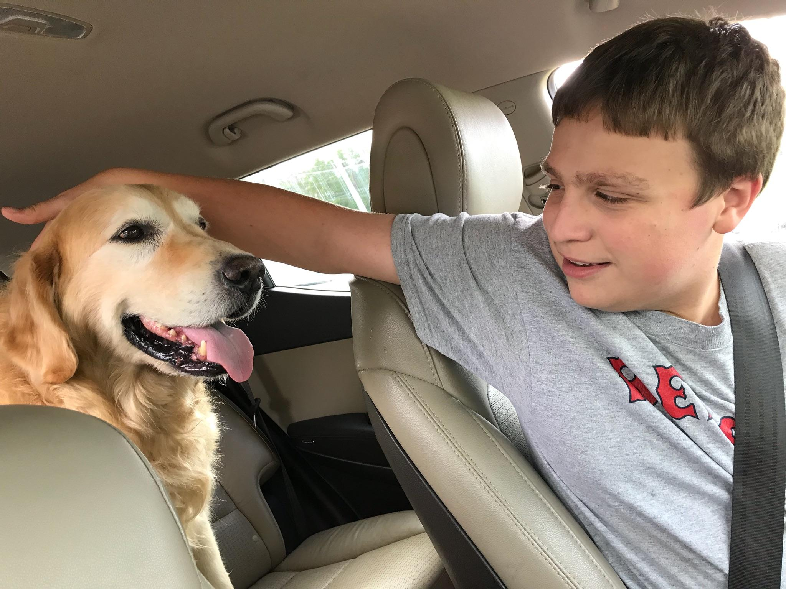
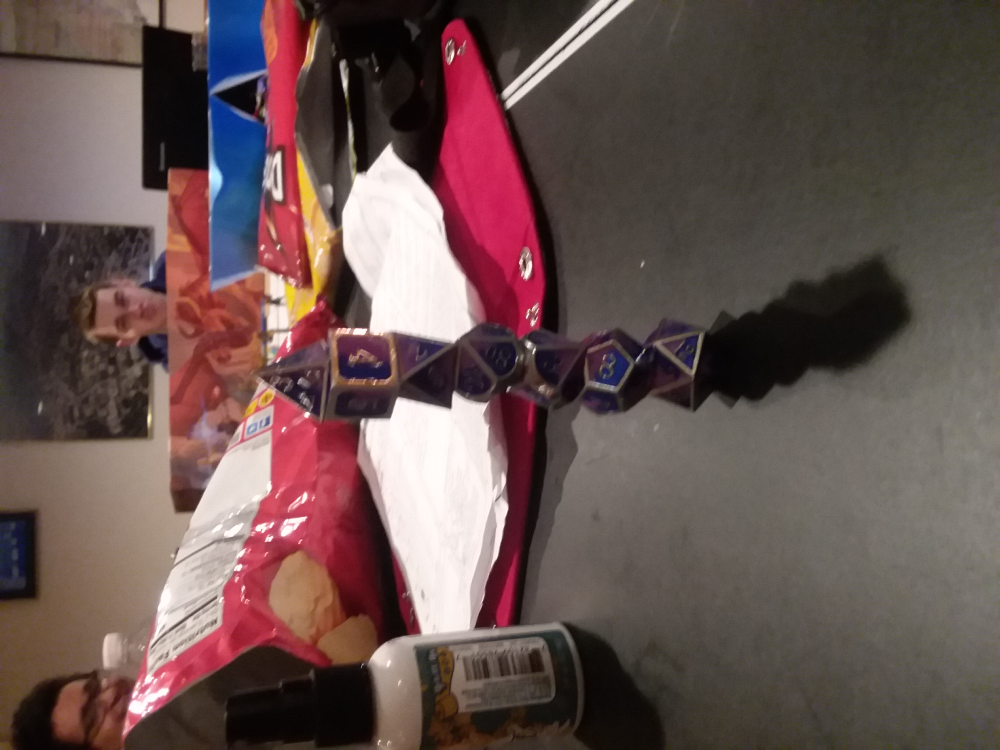

My Bio
Bio
I used to always think that colledge was super far away, I suppose its probably because I never thought I'd actually get here! Ive moved around alot in my life! Most would say too much, but say what you will after living in 13 different places you meet alot of people and you see alot of faces. My dad always said "you only get one chance to make a first impression", I guess I kinda took that to heart since my own personal motto is either make them remember you or do something so insane they cant forget you. If it isn't apparent from class I'm pretty talkitive, I guess not really the social norm for a programmer but hey I've come this far not going to change now! I suppose I should actually say some stuff about my Highschool before I just list them all out. I went to keefe tech in framingham, in my freshman year I toured 4 different shops before settling on programming and over the course of the 4 years in my programming shop I was taught how to program basic apps and the like. However my passion was never web design I was always more interested in either videogame programming or robotics, robotics typically taking up most of my attention. I went to skills usa for robotics and placed second although covid hit and stopped me from going to states. But going into colledge I chose game design after some deliberation, and that about brings us full circle!
Schooling

Hobbies
- Video Games
- Robtics
- Remote Control
- DND